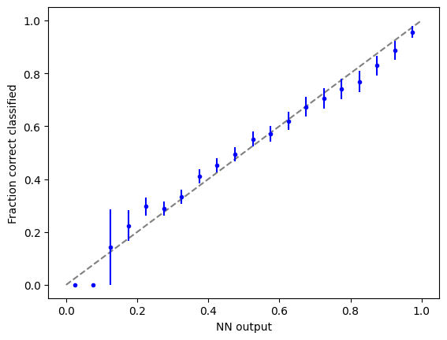
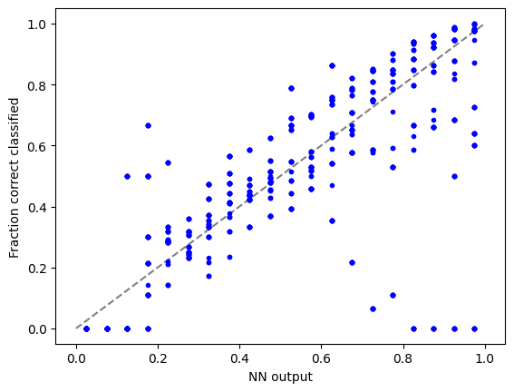
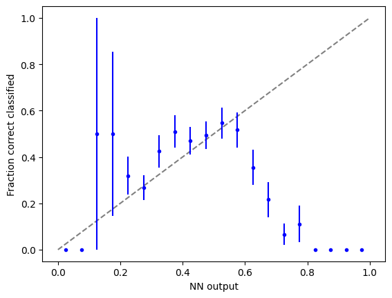

import torch
import torch.nn as nn
import torch.nn.functional as F
import torch.optim as optim
from torchvision import datasets, transforms
from torch.optim.lr_scheduler import StepLR
import numpy as np
import matplotlib.pyplot as plt
import easydictLoad datasets
import deeplake
dstrain = deeplake.load("hub://activeloop/cifar10-train")
dstest = deeplake.load("hub://activeloop/cifar10-test")Opening dataset in read-only mode as you don't have write permissions.\This dataset can be visualized in Jupyter Notebook by ds.visualize() or at https://app.activeloop.ai/activeloop/cifar10-train
\hub://activeloop/cifar10-train loaded successfully.
Opening dataset in read-only mode as you don't have write permissions.|This dataset can be visualized in Jupyter Notebook by ds.visualize() or at https://app.activeloop.ai/activeloop/cifar10-test
\hub://activeloop/cifar10-test loaded successfully.
1 Define NN
class Net(nn.Module):
def __init__(self):
super(Net, self).__init__()
self.conv1 = nn.Conv2d(3, 32, 3, 1)
self.conv2 = nn.Conv2d(32, 64, 3, 1)
self.conv3 = nn.Conv2d(64, 64, 3, 1)
self.dropout1 = nn.Dropout(0.25)
self.dropout2 = nn.Dropout(0.5)
self.fc1 = nn.Linear(2304, 1024)
self.fc2 = nn.Linear(1024,1024)
self.fc3 = nn.Linear(1024,1024)
self.fc4 = nn.Linear(1024,128)
self.fc5 = nn.Linear(128, 10)
def forward(self, x):
x = self.conv1(x)
x = F.relu(x)
x = self.conv2(x)
x = F.relu(x)
x = F.max_pool2d(x, 2)
x = self.dropout1(x)
x = self.conv3(x)
x = F.relu(x)
x = F.max_pool2d(x, 2)
x = self.dropout1(x)
x = torch.flatten(x, 1)
x = self.fc1(x)
x = F.relu(x)
x = self.dropout2(x)
x = self.fc2(x)
x = F.relu(x)
x = self.dropout2(x)
x = self.fc3(x)
x = F.relu(x)
x = self.dropout2(x)
x = self.fc4(x)
x = F.relu(x)
x = self.dropout2(x)
x = self.fc5(x)
output = F.log_softmax(x, dim=1)
return output2 Train NN
def train(args, model, device, train_loader, optimizer, epoch):
model.train()
for batch_idx, data in enumerate(train_loader):
target = data.popitem()[1].squeeze()
images = data.popitem()[1]
images, target = images.to(device), target.to(device)
optimizer.zero_grad()
output = model(images)
loss = F.nll_loss(output, target)
loss.backward()
optimizer.step()
if batch_idx % args.log_interval == 0:
print('Train Epoch: {} [{}/{} ({:.0f}%)]\tLoss: {:.6f}'.format(
epoch, batch_idx * len(images), len(train_loader.dataset),
100. * batch_idx / len(train_loader), loss.item()))
if args.dry_run:
break
def test(model, device, test_loader):
model.eval()
test_loss = 0
correct = 0
with torch.no_grad():
for data in test_loader:
target = data.popitem()[1].squeeze()
images = data.popitem()[1]
images, target = images.to(device), target.to(device)
output = model(images)
test_loss += F.nll_loss(output, target, reduction='sum').item() # sum up batch loss
pred = output.argmax(dim=1, keepdim=True) # get the index of the max log-probability
correct += pred.eq(target.view_as(pred)).sum().item()
test_loss /= len(test_loader.dataset)
print('\nTest set: Average loss: {:.4f}, Accuracy: {}/{} ({:.0f}%)\n'.format(
test_loss, correct, len(test_loader.dataset),
100. * correct / len(test_loader.dataset)))# Training settings
args = easydict.EasyDict({
"batch_size": 64,
"test_batch_size": 10000,
"train_steps": 1000,
"no_cuda": False,
"no_mps": True,
"seed": 1,
"lr": 1.0,
"gamma": 0.7,
"epochs": 5,
"dry_run": False,
"log_interval": 10,
"save_model": False
})
use_cuda = not args.no_cuda and torch.cuda.is_available()
use_mps = not args.no_mps and torch.backends.mps.is_available()
torch.manual_seed(args.seed)
if use_cuda:
device = torch.device("cuda")
elif use_mps:
device = torch.device("mps")
else:
device = torch.device("cpu")
train_kwargs = {'batch_size': args.batch_size}
test_kwargs = {'batch_size': args.test_batch_size}
if use_cuda:
cuda_kwargs = {'num_workers': 1,
'pin_memory': True,
'shuffle': True}
train_kwargs.update(cuda_kwargs)
test_kwargs.update(cuda_kwargs)
tform = transforms.Compose([
transforms.ToPILImage(), # Must convert to PIL image for subsequent operations to run
transforms.RandomRotation(20), # Image augmentation
transforms.ToTensor(), # Must convert to pytorch tensor for subsequent operations to run
transforms.Normalize([0.5, 0.5, 0.5], [0.5, 0.5, 0.5]),
])
#PyTorch Dataloader
train_loader= dstrain.pytorch(batch_size = args.batch_size, num_workers = 1, transform = {'images': tform, 'labels': None}, shuffle = False)
test_loader= dstest.pytorch(batch_size = args.test_batch_size, num_workers = 1, transform = {'images': tform, 'labels': None}, shuffle = False)
model = Net().to(device)
optimizer = optim.Adadelta(model.parameters(), lr=args.lr)
scheduler = StepLR(optimizer, step_size=1, gamma=args.gamma)
for epoch in range(1, args.epochs + 1):
train(args, model, device, train_loader, optimizer, epoch)
test(model, device, test_loader)
scheduler.step()
if args.save_model:
torch.save(model.state_dict(), "cifar10.pt")Train Epoch: 1 [0/50000 (0%)] Loss: 2.299033
Train Epoch: 1 [640/50000 (1%)] Loss: 2.303881
Train Epoch: 1 [1280/50000 (3%)] Loss: 2.308249
Train Epoch: 1 [1920/50000 (4%)] Loss: 2.311914
Train Epoch: 1 [2560/50000 (5%)] Loss: 2.302642
Train Epoch: 1 [3200/50000 (6%)] Loss: 2.297112
Train Epoch: 1 [3840/50000 (8%)] Loss: 2.299109
Train Epoch: 1 [4480/50000 (9%)] Loss: 2.300828
Train Epoch: 1 [5120/50000 (10%)] Loss: 2.314334
Train Epoch: 1 [5760/50000 (12%)] Loss: 2.282249
Train Epoch: 1 [6400/50000 (13%)] Loss: 2.299721
Train Epoch: 1 [7040/50000 (14%)] Loss: 2.279146
Train Epoch: 1 [7680/50000 (15%)] Loss: 2.202436
Train Epoch: 1 [8320/50000 (17%)] Loss: 2.276368
Train Epoch: 1 [8960/50000 (18%)] Loss: 2.253925
Train Epoch: 1 [9600/50000 (19%)] Loss: 2.124990
Train Epoch: 1 [10240/50000 (20%)] Loss: 2.271983
Train Epoch: 1 [10880/50000 (22%)] Loss: 2.158685
Train Epoch: 1 [11520/50000 (23%)] Loss: 2.098037
Train Epoch: 1 [12160/50000 (24%)] Loss: 2.002158
Train Epoch: 1 [12800/50000 (26%)] Loss: 2.067010
Train Epoch: 1 [13440/50000 (27%)] Loss: 2.005337
Train Epoch: 1 [14080/50000 (28%)] Loss: 2.168663
Train Epoch: 1 [14720/50000 (29%)] Loss: 2.123132
Train Epoch: 1 [15360/50000 (31%)] Loss: 2.239423
Train Epoch: 1 [16000/50000 (32%)] Loss: 2.372563
Train Epoch: 1 [16640/50000 (33%)] Loss: 2.105381
Train Epoch: 1 [17280/50000 (35%)] Loss: 2.143692
Train Epoch: 1 [17920/50000 (36%)] Loss: 2.054054
Train Epoch: 1 [18560/50000 (37%)] Loss: 1.999233
Train Epoch: 1 [19200/50000 (38%)] Loss: 2.513296
Train Epoch: 1 [19840/50000 (40%)] Loss: 2.095867
Train Epoch: 1 [20480/50000 (41%)] Loss: 2.089016
Train Epoch: 1 [21120/50000 (42%)] Loss: 2.037011
Train Epoch: 1 [21760/50000 (43%)] Loss: 1.927253
Train Epoch: 1 [22400/50000 (45%)] Loss: 1.933223
Train Epoch: 1 [23040/50000 (46%)] Loss: 1.939663
Train Epoch: 1 [23680/50000 (47%)] Loss: 2.031264
Train Epoch: 1 [24320/50000 (49%)] Loss: 2.104828
Train Epoch: 1 [24960/50000 (50%)] Loss: 1.979264
Train Epoch: 1 [25600/50000 (51%)] Loss: 2.057283
Train Epoch: 1 [26240/50000 (52%)] Loss: 2.096150
Train Epoch: 1 [26880/50000 (54%)] Loss: 1.927215
Train Epoch: 1 [27520/50000 (55%)] Loss: 1.940912
Train Epoch: 1 [28160/50000 (56%)] Loss: 2.024660
Train Epoch: 1 [28800/50000 (58%)] Loss: 1.761359
Train Epoch: 1 [29440/50000 (59%)] Loss: 1.918882
Train Epoch: 1 [30080/50000 (60%)] Loss: 1.801933
Train Epoch: 1 [30720/50000 (61%)] Loss: 1.852930
Train Epoch: 1 [31360/50000 (63%)] Loss: 1.917690
Train Epoch: 1 [32000/50000 (64%)] Loss: 1.902803
Train Epoch: 1 [32640/50000 (65%)] Loss: 2.187632
Train Epoch: 1 [33280/50000 (66%)] Loss: 2.021849
Train Epoch: 1 [33920/50000 (68%)] Loss: 2.286925
Train Epoch: 1 [34560/50000 (69%)] Loss: 1.731677
Train Epoch: 1 [35200/50000 (70%)] Loss: 1.720931
Train Epoch: 1 [35840/50000 (72%)] Loss: 1.840724
Train Epoch: 1 [36480/50000 (73%)] Loss: 1.692477
Train Epoch: 1 [37120/50000 (74%)] Loss: 1.920596
Train Epoch: 1 [37760/50000 (75%)] Loss: 1.839758
Train Epoch: 1 [38400/50000 (77%)] Loss: 1.807819
Train Epoch: 1 [39040/50000 (78%)] Loss: 1.726451
Train Epoch: 1 [39680/50000 (79%)] Loss: 1.787135
Train Epoch: 1 [40320/50000 (81%)] Loss: 1.944968
Train Epoch: 1 [40960/50000 (82%)] Loss: 1.811494
Train Epoch: 1 [41600/50000 (83%)] Loss: 1.693362
Train Epoch: 1 [42240/50000 (84%)] Loss: 2.007142
Train Epoch: 1 [42880/50000 (86%)] Loss: 1.765288
Train Epoch: 1 [43520/50000 (87%)] Loss: 1.843163
Train Epoch: 1 [44160/50000 (88%)] Loss: 1.809114
Train Epoch: 1 [44800/50000 (90%)] Loss: 1.743952
Train Epoch: 1 [45440/50000 (91%)] Loss: 1.610974
Train Epoch: 1 [46080/50000 (92%)] Loss: 1.868534
Train Epoch: 1 [46720/50000 (93%)] Loss: 1.756087
Train Epoch: 1 [47360/50000 (95%)] Loss: 1.768426
Train Epoch: 1 [48000/50000 (96%)] Loss: 2.062875
Train Epoch: 1 [48640/50000 (97%)] Loss: 1.680362
Train Epoch: 1 [49280/50000 (98%)] Loss: 1.770880
Train Epoch: 1 [49920/50000 (100%)] Loss: 1.661914
Test set: Average loss: 2.0876, Accuracy: 2975/10000 (30%)
Train Epoch: 2 [0/50000 (0%)] Loss: 2.076336
Train Epoch: 2 [640/50000 (1%)] Loss: 1.736293
Train Epoch: 2 [1280/50000 (3%)] Loss: 1.649334
Train Epoch: 2 [1920/50000 (4%)] Loss: 1.817636
Train Epoch: 2 [2560/50000 (5%)] Loss: 1.636995
Train Epoch: 2 [3200/50000 (6%)] Loss: 1.821229
Train Epoch: 2 [3840/50000 (8%)] Loss: 1.742177
Train Epoch: 2 [4480/50000 (9%)] Loss: 1.715170
Train Epoch: 2 [5120/50000 (10%)] Loss: 1.737326
Train Epoch: 2 [5760/50000 (12%)] Loss: 1.615254
Train Epoch: 2 [6400/50000 (13%)] Loss: 1.511534
Train Epoch: 2 [7040/50000 (14%)] Loss: 1.683380
Train Epoch: 2 [7680/50000 (15%)] Loss: 1.725898
Train Epoch: 2 [8320/50000 (17%)] Loss: 1.627028
Train Epoch: 2 [8960/50000 (18%)] Loss: 1.833347
Train Epoch: 2 [9600/50000 (19%)] Loss: 1.901456
Train Epoch: 2 [10240/50000 (20%)] Loss: 1.670048
Train Epoch: 2 [10880/50000 (22%)] Loss: 1.678298
Train Epoch: 2 [11520/50000 (23%)] Loss: 1.443491
Train Epoch: 2 [12160/50000 (24%)] Loss: 1.394879
Train Epoch: 2 [12800/50000 (26%)] Loss: 1.320042
Train Epoch: 2 [13440/50000 (27%)] Loss: 1.304866
Train Epoch: 2 [14080/50000 (28%)] Loss: 1.739485
Train Epoch: 2 [14720/50000 (29%)] Loss: 1.597427
Train Epoch: 2 [15360/50000 (31%)] Loss: 1.672872
Train Epoch: 2 [16000/50000 (32%)] Loss: 1.731876
Train Epoch: 2 [16640/50000 (33%)] Loss: 1.447042
Train Epoch: 2 [17280/50000 (35%)] Loss: 1.571955
Train Epoch: 2 [17920/50000 (36%)] Loss: 1.604226
Train Epoch: 2 [18560/50000 (37%)] Loss: 1.642267
Train Epoch: 2 [19200/50000 (38%)] Loss: 1.529496
Train Epoch: 2 [19840/50000 (40%)] Loss: 1.549839
Train Epoch: 2 [20480/50000 (41%)] Loss: 1.541108
Train Epoch: 2 [21120/50000 (42%)] Loss: 1.543645
Train Epoch: 2 [21760/50000 (43%)] Loss: 1.675449
Train Epoch: 2 [22400/50000 (45%)] Loss: 1.617361
Train Epoch: 2 [23040/50000 (46%)] Loss: 1.588065
Train Epoch: 2 [23680/50000 (47%)] Loss: 1.290686
Train Epoch: 2 [24320/50000 (49%)] Loss: 1.431576
Train Epoch: 2 [24960/50000 (50%)] Loss: 1.551362
Train Epoch: 2 [25600/50000 (51%)] Loss: 1.475006
Train Epoch: 2 [26240/50000 (52%)] Loss: 1.719314
Train Epoch: 2 [26880/50000 (54%)] Loss: 1.584997
Train Epoch: 2 [27520/50000 (55%)] Loss: 1.457669
Train Epoch: 2 [28160/50000 (56%)] Loss: 1.564348
Train Epoch: 2 [28800/50000 (58%)] Loss: 1.341128
Train Epoch: 2 [29440/50000 (59%)] Loss: 1.544459
Train Epoch: 2 [30080/50000 (60%)] Loss: 1.447345
Train Epoch: 2 [30720/50000 (61%)] Loss: 1.721715
Train Epoch: 2 [31360/50000 (63%)] Loss: 1.985044
Train Epoch: 2 [32000/50000 (64%)] Loss: 1.538558
Train Epoch: 2 [32640/50000 (65%)] Loss: 1.472522
Train Epoch: 2 [33280/50000 (66%)] Loss: 1.815843
Train Epoch: 2 [33920/50000 (68%)] Loss: 1.524235
Train Epoch: 2 [34560/50000 (69%)] Loss: 1.465631
Train Epoch: 2 [35200/50000 (70%)] Loss: 1.500306
Train Epoch: 2 [35840/50000 (72%)] Loss: 1.445710
Train Epoch: 2 [36480/50000 (73%)] Loss: 1.282985
Train Epoch: 2 [37120/50000 (74%)] Loss: 1.560350
Train Epoch: 2 [37760/50000 (75%)] Loss: 1.597907
Train Epoch: 2 [38400/50000 (77%)] Loss: 1.632935
Train Epoch: 2 [39040/50000 (78%)] Loss: 1.624667
Train Epoch: 2 [39680/50000 (79%)] Loss: 1.489027
Train Epoch: 2 [40320/50000 (81%)] Loss: 1.522667
Train Epoch: 2 [40960/50000 (82%)] Loss: 1.565070
Train Epoch: 2 [41600/50000 (83%)] Loss: 1.345318
Train Epoch: 2 [42240/50000 (84%)] Loss: 1.458106
Train Epoch: 2 [42880/50000 (86%)] Loss: 1.747068
Train Epoch: 2 [43520/50000 (87%)] Loss: 1.509258
Train Epoch: 2 [44160/50000 (88%)] Loss: 1.537169
Train Epoch: 2 [44800/50000 (90%)] Loss: 1.450940
Train Epoch: 2 [45440/50000 (91%)] Loss: 1.512586
Train Epoch: 2 [46080/50000 (92%)] Loss: 1.455556
Train Epoch: 2 [46720/50000 (93%)] Loss: 1.290530
Train Epoch: 2 [47360/50000 (95%)] Loss: 1.507841
Train Epoch: 2 [48000/50000 (96%)] Loss: 1.704669
Train Epoch: 2 [48640/50000 (97%)] Loss: 1.483636
Train Epoch: 2 [49280/50000 (98%)] Loss: 1.562542
Train Epoch: 2 [49920/50000 (100%)] Loss: 1.302517
Test set: Average loss: 1.3601, Accuracy: 5081/10000 (51%)
Train Epoch: 3 [0/50000 (0%)] Loss: 1.371460
Train Epoch: 3 [640/50000 (1%)] Loss: 1.624153
Train Epoch: 3 [1280/50000 (3%)] Loss: 1.427581
Train Epoch: 3 [1920/50000 (4%)] Loss: 1.421201
Train Epoch: 3 [2560/50000 (5%)] Loss: 1.279908
Train Epoch: 3 [3200/50000 (6%)] Loss: 1.360715
Train Epoch: 3 [3840/50000 (8%)] Loss: 1.445281
Train Epoch: 3 [4480/50000 (9%)] Loss: 1.713427
Train Epoch: 3 [5120/50000 (10%)] Loss: 1.614360
Train Epoch: 3 [5760/50000 (12%)] Loss: 1.414564
Train Epoch: 3 [6400/50000 (13%)] Loss: 1.358780
Train Epoch: 3 [7040/50000 (14%)] Loss: 1.449256
Train Epoch: 3 [7680/50000 (15%)] Loss: 1.690103
Train Epoch: 3 [8320/50000 (17%)] Loss: 1.309553
Train Epoch: 3 [8960/50000 (18%)] Loss: 1.616751
Train Epoch: 3 [9600/50000 (19%)] Loss: 1.543887
Train Epoch: 3 [10240/50000 (20%)] Loss: 1.614317
Train Epoch: 3 [10880/50000 (22%)] Loss: 1.462769
Train Epoch: 3 [11520/50000 (23%)] Loss: 1.250479
Train Epoch: 3 [12160/50000 (24%)] Loss: 1.327426
Train Epoch: 3 [12800/50000 (26%)] Loss: 1.127115
Train Epoch: 3 [13440/50000 (27%)] Loss: 1.086113
Train Epoch: 3 [14080/50000 (28%)] Loss: 1.446531
Train Epoch: 3 [14720/50000 (29%)] Loss: 1.302430
Train Epoch: 3 [15360/50000 (31%)] Loss: 1.373820
Train Epoch: 3 [16000/50000 (32%)] Loss: 1.442054
Train Epoch: 3 [16640/50000 (33%)] Loss: 1.330654
Train Epoch: 3 [17280/50000 (35%)] Loss: 1.588567
Train Epoch: 3 [17920/50000 (36%)] Loss: 1.254269
Train Epoch: 3 [18560/50000 (37%)] Loss: 1.314287
Train Epoch: 3 [19200/50000 (38%)] Loss: 1.260060
Train Epoch: 3 [19840/50000 (40%)] Loss: 1.281211
Train Epoch: 3 [20480/50000 (41%)] Loss: 1.536281
Train Epoch: 3 [21120/50000 (42%)] Loss: 1.027623
Train Epoch: 3 [21760/50000 (43%)] Loss: 1.594304
Train Epoch: 3 [22400/50000 (45%)] Loss: 1.335722
Train Epoch: 3 [23040/50000 (46%)] Loss: 1.247644
Train Epoch: 3 [23680/50000 (47%)] Loss: 1.093311
Train Epoch: 3 [24320/50000 (49%)] Loss: 1.194391
Train Epoch: 3 [24960/50000 (50%)] Loss: 1.226218
Train Epoch: 3 [25600/50000 (51%)] Loss: 1.361588
Train Epoch: 3 [26240/50000 (52%)] Loss: 1.391386
Train Epoch: 3 [26880/50000 (54%)] Loss: 1.612009
Train Epoch: 3 [27520/50000 (55%)] Loss: 1.393869
Train Epoch: 3 [28160/50000 (56%)] Loss: 1.216224
Train Epoch: 3 [28800/50000 (58%)] Loss: 1.128598
Train Epoch: 3 [29440/50000 (59%)] Loss: 1.295114
Train Epoch: 3 [30080/50000 (60%)] Loss: 1.125089
Train Epoch: 3 [30720/50000 (61%)] Loss: 1.624485
Train Epoch: 3 [31360/50000 (63%)] Loss: 1.413428
Train Epoch: 3 [32000/50000 (64%)] Loss: 1.381072
Train Epoch: 3 [32640/50000 (65%)] Loss: 1.285342
Train Epoch: 3 [33280/50000 (66%)] Loss: 1.665836
Train Epoch: 3 [33920/50000 (68%)] Loss: 1.436385
Train Epoch: 3 [34560/50000 (69%)] Loss: 1.304651
Train Epoch: 3 [35200/50000 (70%)] Loss: 1.206814
Train Epoch: 3 [35840/50000 (72%)] Loss: 1.428128
Train Epoch: 3 [36480/50000 (73%)] Loss: 1.249624
Train Epoch: 3 [37120/50000 (74%)] Loss: 1.376553
Train Epoch: 3 [37760/50000 (75%)] Loss: 1.357802
Train Epoch: 3 [38400/50000 (77%)] Loss: 1.378644
Train Epoch: 3 [39040/50000 (78%)] Loss: 1.209445
Train Epoch: 3 [39680/50000 (79%)] Loss: 1.336992
Train Epoch: 3 [40320/50000 (81%)] Loss: 1.352356
Train Epoch: 3 [40960/50000 (82%)] Loss: 1.422852
Train Epoch: 3 [41600/50000 (83%)] Loss: 1.442010
Train Epoch: 3 [42240/50000 (84%)] Loss: 1.190306
Train Epoch: 3 [42880/50000 (86%)] Loss: 1.506367
Train Epoch: 3 [43520/50000 (87%)] Loss: 1.450702
Train Epoch: 3 [44160/50000 (88%)] Loss: 1.412722
Train Epoch: 3 [44800/50000 (90%)] Loss: 1.466206
Train Epoch: 3 [45440/50000 (91%)] Loss: 1.307068
Train Epoch: 3 [46080/50000 (92%)] Loss: 1.115371
Train Epoch: 3 [46720/50000 (93%)] Loss: 1.218742
Train Epoch: 3 [47360/50000 (95%)] Loss: 1.509593
Train Epoch: 3 [48000/50000 (96%)] Loss: 1.511044
Train Epoch: 3 [48640/50000 (97%)] Loss: 1.171461
Train Epoch: 3 [49280/50000 (98%)] Loss: 1.441309
Train Epoch: 3 [49920/50000 (100%)] Loss: 1.306461
Test set: Average loss: 1.2455, Accuracy: 5544/10000 (55%)
Train Epoch: 4 [0/50000 (0%)] Loss: 1.292650
Train Epoch: 4 [640/50000 (1%)] Loss: 1.245009
Train Epoch: 4 [1280/50000 (3%)] Loss: 1.300061
Train Epoch: 4 [1920/50000 (4%)] Loss: 1.313036
Train Epoch: 4 [2560/50000 (5%)] Loss: 1.117794
Train Epoch: 4 [3200/50000 (6%)] Loss: 1.141448
Train Epoch: 4 [3840/50000 (8%)] Loss: 1.226919
Train Epoch: 4 [4480/50000 (9%)] Loss: 1.419545
Train Epoch: 4 [5120/50000 (10%)] Loss: 1.592140
Train Epoch: 4 [5760/50000 (12%)] Loss: 1.234232
Train Epoch: 4 [6400/50000 (13%)] Loss: 1.210978
Train Epoch: 4 [7040/50000 (14%)] Loss: 1.283324
Train Epoch: 4 [7680/50000 (15%)] Loss: 1.153934
Train Epoch: 4 [8320/50000 (17%)] Loss: 1.174017
Train Epoch: 4 [8960/50000 (18%)] Loss: 1.388854
Train Epoch: 4 [9600/50000 (19%)] Loss: 1.241210
Train Epoch: 4 [10240/50000 (20%)] Loss: 1.275886
Train Epoch: 4 [10880/50000 (22%)] Loss: 1.422421
Train Epoch: 4 [11520/50000 (23%)] Loss: 1.246687
Train Epoch: 4 [12160/50000 (24%)] Loss: 1.085730
Train Epoch: 4 [12800/50000 (26%)] Loss: 0.933817
Train Epoch: 4 [13440/50000 (27%)] Loss: 0.973566
Train Epoch: 4 [14080/50000 (28%)] Loss: 1.133241
Train Epoch: 4 [14720/50000 (29%)] Loss: 1.006167
Train Epoch: 4 [15360/50000 (31%)] Loss: 1.483841
Train Epoch: 4 [16000/50000 (32%)] Loss: 1.080769
Train Epoch: 4 [16640/50000 (33%)] Loss: 1.248489
Train Epoch: 4 [17280/50000 (35%)] Loss: 1.597972
Train Epoch: 4 [17920/50000 (36%)] Loss: 1.152869
Train Epoch: 4 [18560/50000 (37%)] Loss: 1.093884
Train Epoch: 4 [19200/50000 (38%)] Loss: 1.192657
Train Epoch: 4 [19840/50000 (40%)] Loss: 1.225937
Train Epoch: 4 [20480/50000 (41%)] Loss: 1.462049
Train Epoch: 4 [21120/50000 (42%)] Loss: 1.200828
Train Epoch: 4 [21760/50000 (43%)] Loss: 1.435224
Train Epoch: 4 [22400/50000 (45%)] Loss: 1.181300
Train Epoch: 4 [23040/50000 (46%)] Loss: 1.276666
Train Epoch: 4 [23680/50000 (47%)] Loss: 0.870628
Train Epoch: 4 [24320/50000 (49%)] Loss: 1.266025
Train Epoch: 4 [24960/50000 (50%)] Loss: 1.045233
Train Epoch: 4 [25600/50000 (51%)] Loss: 1.486843
Train Epoch: 4 [26240/50000 (52%)] Loss: 1.297647
Train Epoch: 4 [26880/50000 (54%)] Loss: 1.418644
Train Epoch: 4 [27520/50000 (55%)] Loss: 1.313311
Train Epoch: 4 [28160/50000 (56%)] Loss: 1.088174
Train Epoch: 4 [28800/50000 (58%)] Loss: 0.937125
Train Epoch: 4 [29440/50000 (59%)] Loss: 1.154282
Train Epoch: 4 [30080/50000 (60%)] Loss: 1.139353
Train Epoch: 4 [30720/50000 (61%)] Loss: 1.355724
Train Epoch: 4 [31360/50000 (63%)] Loss: 1.252209
Train Epoch: 4 [32000/50000 (64%)] Loss: 1.445477
Train Epoch: 4 [32640/50000 (65%)] Loss: 1.183073
Train Epoch: 4 [33280/50000 (66%)] Loss: 1.420544
Train Epoch: 4 [33920/50000 (68%)] Loss: 1.388390
Train Epoch: 4 [34560/50000 (69%)] Loss: 1.275713
Train Epoch: 4 [35200/50000 (70%)] Loss: 1.062145
Train Epoch: 4 [35840/50000 (72%)] Loss: 1.282599
Train Epoch: 4 [36480/50000 (73%)] Loss: 1.029253
Train Epoch: 4 [37120/50000 (74%)] Loss: 1.339740
Train Epoch: 4 [37760/50000 (75%)] Loss: 1.436886
Train Epoch: 4 [38400/50000 (77%)] Loss: 1.127722
Train Epoch: 4 [39040/50000 (78%)] Loss: 1.297532
Train Epoch: 4 [39680/50000 (79%)] Loss: 1.342517
Train Epoch: 4 [40320/50000 (81%)] Loss: 1.224846
Train Epoch: 4 [40960/50000 (82%)] Loss: 1.292999
Train Epoch: 4 [41600/50000 (83%)] Loss: 1.049144
Train Epoch: 4 [42240/50000 (84%)] Loss: 1.006596
Train Epoch: 4 [42880/50000 (86%)] Loss: 1.143293
Train Epoch: 4 [43520/50000 (87%)] Loss: 1.291006
Train Epoch: 4 [44160/50000 (88%)] Loss: 1.425886
Train Epoch: 4 [44800/50000 (90%)] Loss: 1.324441
Train Epoch: 4 [45440/50000 (91%)] Loss: 0.980586
Train Epoch: 4 [46080/50000 (92%)] Loss: 0.926209
Train Epoch: 4 [46720/50000 (93%)] Loss: 0.968480
Train Epoch: 4 [47360/50000 (95%)] Loss: 1.262688
Train Epoch: 4 [48000/50000 (96%)] Loss: 1.390973
Train Epoch: 4 [48640/50000 (97%)] Loss: 1.080835
Train Epoch: 4 [49280/50000 (98%)] Loss: 1.294208
Train Epoch: 4 [49920/50000 (100%)] Loss: 1.383242
Test set: Average loss: 1.0509, Accuracy: 6335/10000 (63%)
Train Epoch: 5 [0/50000 (0%)] Loss: 1.017294
Train Epoch: 5 [640/50000 (1%)] Loss: 1.357502
Train Epoch: 5 [1280/50000 (3%)] Loss: 1.303278
Train Epoch: 5 [1920/50000 (4%)] Loss: 1.178801
Train Epoch: 5 [2560/50000 (5%)] Loss: 1.265286
Train Epoch: 5 [3200/50000 (6%)] Loss: 1.208673
Train Epoch: 5 [3840/50000 (8%)] Loss: 1.208133
Train Epoch: 5 [4480/50000 (9%)] Loss: 1.523769
Train Epoch: 5 [5120/50000 (10%)] Loss: 1.205928
Train Epoch: 5 [5760/50000 (12%)] Loss: 1.088114
Train Epoch: 5 [6400/50000 (13%)] Loss: 1.150361
Train Epoch: 5 [7040/50000 (14%)] Loss: 1.265393
Train Epoch: 5 [7680/50000 (15%)] Loss: 1.182011
Train Epoch: 5 [8320/50000 (17%)] Loss: 1.002793
Train Epoch: 5 [8960/50000 (18%)] Loss: 1.269448
Train Epoch: 5 [9600/50000 (19%)] Loss: 1.102487
Train Epoch: 5 [10240/50000 (20%)] Loss: 1.135620
Train Epoch: 5 [10880/50000 (22%)] Loss: 1.277438
Train Epoch: 5 [11520/50000 (23%)] Loss: 1.036688
Train Epoch: 5 [12160/50000 (24%)] Loss: 1.020629
Train Epoch: 5 [12800/50000 (26%)] Loss: 1.004888
Train Epoch: 5 [13440/50000 (27%)] Loss: 0.838683
Train Epoch: 5 [14080/50000 (28%)] Loss: 1.165713
Train Epoch: 5 [14720/50000 (29%)] Loss: 1.093017
Train Epoch: 5 [15360/50000 (31%)] Loss: 1.159237
Train Epoch: 5 [16000/50000 (32%)] Loss: 1.002613
Train Epoch: 5 [16640/50000 (33%)] Loss: 1.077928
Train Epoch: 5 [17280/50000 (35%)] Loss: 1.322866
Train Epoch: 5 [17920/50000 (36%)] Loss: 1.152186
Train Epoch: 5 [18560/50000 (37%)] Loss: 0.951957
Train Epoch: 5 [19200/50000 (38%)] Loss: 1.192373
Train Epoch: 5 [19840/50000 (40%)] Loss: 0.965350
Train Epoch: 5 [20480/50000 (41%)] Loss: 1.252241
Train Epoch: 5 [21120/50000 (42%)] Loss: 0.962061
Train Epoch: 5 [21760/50000 (43%)] Loss: 1.274823
Train Epoch: 5 [22400/50000 (45%)] Loss: 1.122014
Train Epoch: 5 [23040/50000 (46%)] Loss: 1.134525
Train Epoch: 5 [23680/50000 (47%)] Loss: 0.873066
Train Epoch: 5 [24320/50000 (49%)] Loss: 1.235352
Train Epoch: 5 [24960/50000 (50%)] Loss: 1.078219
Train Epoch: 5 [25600/50000 (51%)] Loss: 0.885347
Train Epoch: 5 [26240/50000 (52%)] Loss: 1.169697
Train Epoch: 5 [26880/50000 (54%)] Loss: 1.182475
Train Epoch: 5 [27520/50000 (55%)] Loss: 1.110869
Train Epoch: 5 [28160/50000 (56%)] Loss: 1.340236
Train Epoch: 5 [28800/50000 (58%)] Loss: 0.875181
Train Epoch: 5 [29440/50000 (59%)] Loss: 1.162925
Train Epoch: 5 [30080/50000 (60%)] Loss: 1.156812
Train Epoch: 5 [30720/50000 (61%)] Loss: 1.103635
Train Epoch: 5 [31360/50000 (63%)] Loss: 1.476050
Train Epoch: 5 [32000/50000 (64%)] Loss: 1.268545
Train Epoch: 5 [32640/50000 (65%)] Loss: 1.121438
Train Epoch: 5 [33280/50000 (66%)] Loss: 1.293312
Train Epoch: 5 [33920/50000 (68%)] Loss: 1.310206
Train Epoch: 5 [34560/50000 (69%)] Loss: 1.033878
Train Epoch: 5 [35200/50000 (70%)] Loss: 0.927760
Train Epoch: 5 [35840/50000 (72%)] Loss: 1.081147
Train Epoch: 5 [36480/50000 (73%)] Loss: 0.890711
Train Epoch: 5 [37120/50000 (74%)] Loss: 1.131085
Train Epoch: 5 [37760/50000 (75%)] Loss: 1.117947
Train Epoch: 5 [38400/50000 (77%)] Loss: 1.048056
Train Epoch: 5 [39040/50000 (78%)] Loss: 1.083112
Train Epoch: 5 [39680/50000 (79%)] Loss: 1.129287
Train Epoch: 5 [40320/50000 (81%)] Loss: 1.055892
Train Epoch: 5 [40960/50000 (82%)] Loss: 1.076065
Train Epoch: 5 [41600/50000 (83%)] Loss: 1.144461
Train Epoch: 5 [42240/50000 (84%)] Loss: 1.063576
Train Epoch: 5 [42880/50000 (86%)] Loss: 1.246154
Train Epoch: 5 [43520/50000 (87%)] Loss: 1.204177
Train Epoch: 5 [44160/50000 (88%)] Loss: 1.223426
Train Epoch: 5 [44800/50000 (90%)] Loss: 1.406096
Train Epoch: 5 [45440/50000 (91%)] Loss: 0.989064
Train Epoch: 5 [46080/50000 (92%)] Loss: 0.979435
Train Epoch: 5 [46720/50000 (93%)] Loss: 1.069571
Train Epoch: 5 [47360/50000 (95%)] Loss: 1.052903
Train Epoch: 5 [48000/50000 (96%)] Loss: 1.392070
Train Epoch: 5 [48640/50000 (97%)] Loss: 0.978561
Train Epoch: 5 [49280/50000 (98%)] Loss: 1.049147
Train Epoch: 5 [49920/50000 (100%)] Loss: 0.868054
Test set: Average loss: 1.0346, Accuracy: 6504/10000 (65%)
3 Tests on trained NN
model.eval()
with torch.no_grad():
for data, target in test_loader:
data, target = data.to(device), target.to(device)
output = model(data)
pred = output.argmax(dim=1, keepdim=True) # get the index of the max log-probability
pred2 = torch.topk(output, k=2, dim=1)[1][:,1] # index of second largest log-prob
pred2 = pred2.reshape(pred2.shape[0],1)3.1 Correct classified vs actual number as a function of ML confidence for max log-prob
## Transform to range [0,1]
output_softmax = torch.softmax(output, dim=1)
## Select largest entry
selected_entries = torch.gather(output_softmax, 1, pred)step = 0.05
cat = 1
binMean = []
correctFreq = []
error = []
correct = []
for value in np.arange(0, 1.0, step):
start = value
end = start+step
# Select entries with convidence in interval (start,end]
conf_in_range = selected_entries[(selected_entries>start) & (selected_entries<=end)]
pred_in_range = pred[(selected_entries>start) & (selected_entries<=end)]
targ_in_range = target[[(selected_entries>start)[:,0] & (selected_entries<=end)[:,0]]].squeeze()
binMean.append( start + step/2 )
correct.append( (pred_in_range == targ_in_range).sum().item() )
correctFreq.append( (pred_in_range == targ_in_range).sum().item()/targ_in_range.shape[0] if targ_in_range.shape[0]!=0 else 0 )
error.append( np.sqrt((pred_in_range == targ_in_range).sum().item())/targ_in_range.shape[0] if targ_in_range.shape[0]!=0 else 0 )
plt.plot([0,1], [0,1], '--', color='grey')
plt.errorbar(binMean, correctFreq, error, marker='.', linestyle='', color='blue')
plt.xlabel("NN output")
plt.ylabel("Fraction correct classified")
plt.show()
3.2 Classwise check
step = 0.05
binMean = []
correctFreq = []
error = []
correct = []
plt.plot([0,1], [0,1], '--', color='grey')
for cat in np.arange(0,10):
for value in np.arange(0, 1.0, step):
start = value
end = start+step
# Select entries with convidence in interval (start,end]
conf_in_range = selected_entries[(selected_entries>start) & (selected_entries<=end)]
pred_in_range = pred[(selected_entries>start) & (selected_entries<=end)]
targ_in_range = target[[(selected_entries>start)[:,0] & (selected_entries<=end)[:,0]]].squeeze()
# Confine to only entries with target = cat
conf_in_range = conf_in_range[targ_in_range==cat]
pred_in_range = pred_in_range[targ_in_range==cat]
targ_in_range = targ_in_range[targ_in_range==cat]
binMean.append( start + step/2 )
correct.append( (pred_in_range == targ_in_range).sum().item() )
correctFreq.append( (pred_in_range == targ_in_range).sum().item()/targ_in_range.shape[0] if targ_in_range.shape[0]!=0 else 0 )
error.append( np.sqrt((pred_in_range == targ_in_range).sum().item())/targ_in_range.shape[0] if targ_in_range.shape[0]!=0 else 0 )
plt.plot(binMean, correctFreq, marker='.', linestyle='', linewidth=0.1, color='blue')
plt.xlabel("NN output")
plt.ylabel("Fraction correct classified")
plt.show()
step = 0.05
binMean = []
correctFreq = []
error = []
correct = []
plt.plot([0,1], [0,1], '--', color='grey')
cat = 3
for value in np.arange(0, 1.0, step):
start = value
end = start+step
# Select entries with convidence in interval (start,end]
conf_in_range = selected_entries[(selected_entries>start) & (selected_entries<=end)]
pred_in_range = pred[(selected_entries>start) & (selected_entries<=end)]
targ_in_range = target[[(selected_entries>start)[:,0] & (selected_entries<=end)[:,0]]].squeeze()
# Confine to only entries with target = cat
conf_in_range = conf_in_range[targ_in_range==cat]
pred_in_range = pred_in_range[targ_in_range==cat]
targ_in_range = targ_in_range[targ_in_range==cat]
binMean.append( start + step/2 )
correct.append( (pred_in_range == targ_in_range).sum().item() )
correctFreq.append( (pred_in_range == targ_in_range).sum().item()/targ_in_range.shape[0] if targ_in_range.shape[0]!=0 else 0 )
error.append( np.sqrt((pred_in_range == targ_in_range).sum().item())/targ_in_range.shape[0] if targ_in_range.shape[0]!=0 else 0 )
plt.errorbar(binMean, correctFreq, error, marker='.', linestyle='', color='blue')
plt.xlabel("NN output")
plt.ylabel("Fraction correct classified")
plt.show()